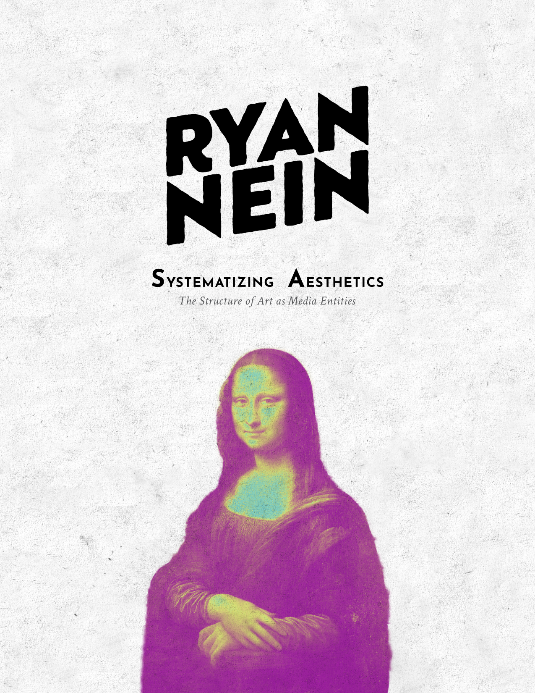
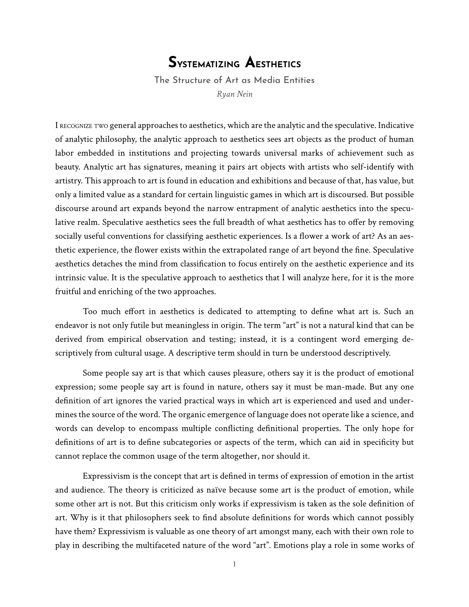
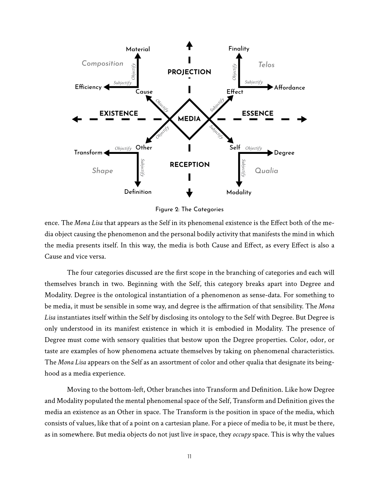
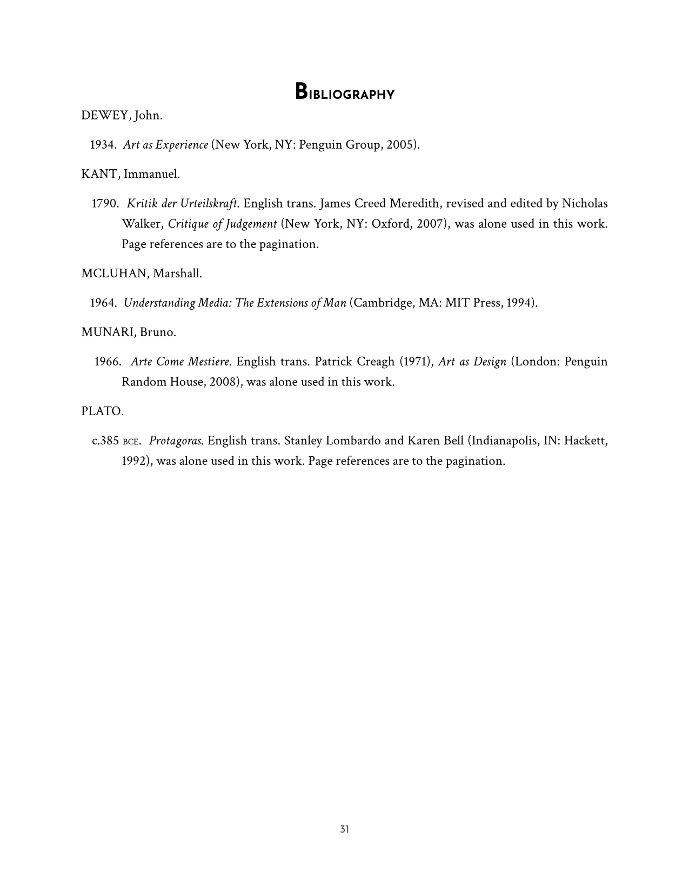

Systematizing Aesthetics
This video develops a philosophical framework for understanding media and aesthetic experience, rejecting the traditional separation of form and content. Instead of treating media as an object with detachable properties, the system argues for an equiprimordial view where medium and message arise together as a single phenomenon. Media is not simply observed but lived through as a experience.
Summary
A central component of the framework is a categorical system derived from Aristotelian principles. These categories describe how raw phenomena become media entities:
Self — The subjective and phenomenal observation, including qualia and sensory processing.
Other — The external shape of the work, providing shape, definition, and spatial presence.
Cause — The material and efficient origins of the work, including its physical components and the processes that brought it into being.
Effect — The finality and affordance of the work, describing what it does, what it makes possible, and how it participates in a larger field of interaction.
These categories function as the operators of entification. Objectification clusters the discrete, finite, and physical, while subjectification clusters the essential, mental, and unbound. Media emerges from the interplay between these poles. Without categorical processing, phenomena would remain undifferentiated and unable to carry meaning.
Context is essential to this transformation. Meaning is carved out of the pan predicative block of possible interpretations through nested mediums such as physical, historical, linguistic, and cultural layers. A work becomes media only when contextualized within these structures, which determine how it is read, interpreted, and situated within discourse.
To move beyond the normativity of good versus bad, the video introduces the Wheel of Relation, a diagnostic tool that maps aesthetic experience through tonal categories such as Expansion, Contraction, Entropy, and Negentropy. These tonalities describe the felt character of a work rather than assigning it a verdict. Descriptive terms like sublime or exquisite are preferred because they communicate the nature of the experience rather than the critic's approval.
Critique, in this system, is a narrative practice. It is a way of articulating the encounter with a work, describing its tonal relations and experiential qualities. Good taste is framed as active engagement rather than passive preference, grounded in the ability to communicate how a work feels and what it does within consciousness.
PDF Preview
This essay is available as a downloadable PDF here.



